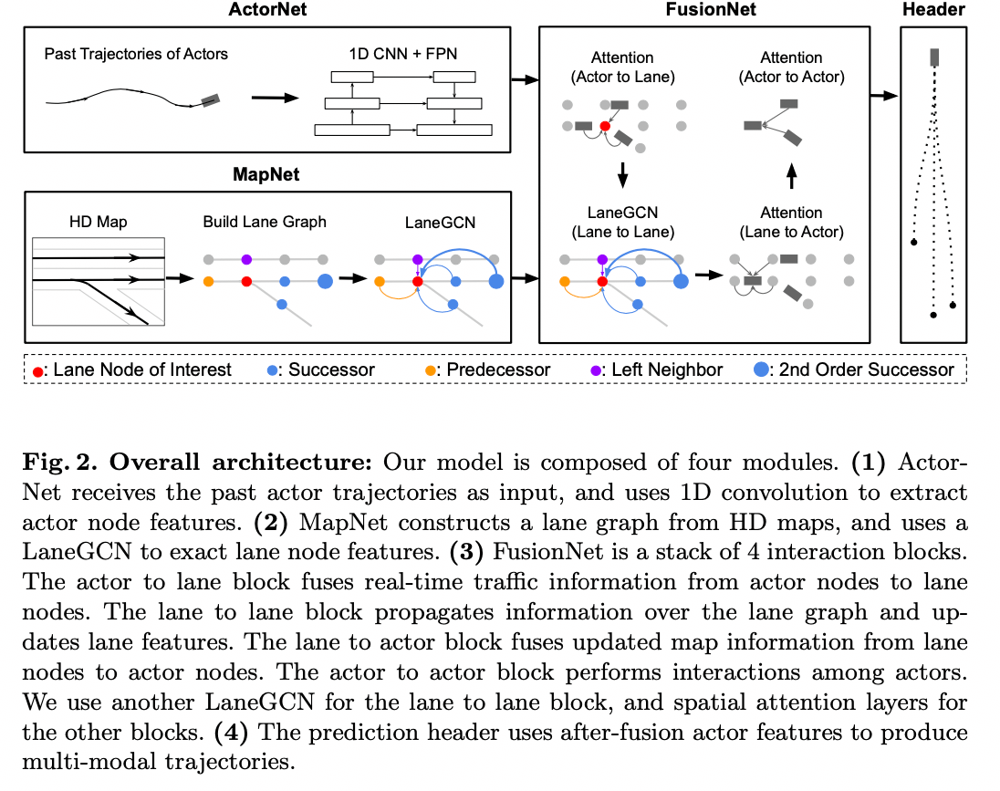

Overview
这是一篇来自Uber行为预测的文章。
和VectorNet类似，没有用语义地图来对网络进行encode，而是提出了LaneGCN，它使用多个邻接矩阵扩展图的卷积操作，并沿车道进行尺度扩张。为了能够获取复杂车辆和地图的交互，提出了融合网络fusion network进行建模，它包括actor-to-lane, lane-to-lane, lane-to-actor 和 actor-to-actor。
这篇paper提出的方法在Argoverse数据集上取得了SOTA的效果。
过往方法的缺点
同样也是在说语义地图的方法的缺点
- rasterization 的过程不可避免的会导致信息的丢失
- 使用二维卷积捕捉地图图结构复杂的拓扑结构，效率可能会很低
主要贡献
- 提出laneGCN，可以有效捕捉复杂的车道拓扑结构和长时依赖
- 将actor和车道表征为图中的节点，使用1D CNN和LaneGCN，分别提取actor和车道的节点特征，利用A2L, L2L, L2A, A2A来捕捉交互特征
- 在Argoverse数据集上取得SOTA的效果
和VectorNet的对比
First, VectorNet uses vanilla graph networks with undirected full connections, while we build a sparsely connected lane graph following the map topology and propose task specific multi-type and dilated graph operators.
Second, VectorNet uses polyline-level nodes for interaction, while our LaneGCN uses polyline segments as map nodes to capture higher resolution. Note that in our approach nodes in different polylines can interact with each other through dilated connections.
- VectorNet使用无向全连接的普通图网络（Vanilla GCN），本文根据地图的拓扑构建了稀疏的图，并提出空洞卷积来扩展图的操作
- VectorNet使用折线级的节点进行交互，而我们的LaneGCN使用折线段作为地图节点以获取更高的分辨率。注意，在我们的方法中，不同折线中的节点可以扩展连接的相互作用。
网络结构
 主要是几个部分：
- ActorNet从观察到的过去轨迹中提取行动者的特征
- HDMap中构造车道图像并使用LaneGCN提取地图特征。
- 然后使用FusionNet融合模型模拟actor和车道图之间的交互，并预测未来的轨迹
ActorNet
对于actor过去的轨迹 \(\{\Delta P_{-(T-1)}, ..., \Delta P_{-1}, \Delta P_{0} \}\), （\(\Delta P_t)\)为2D的坐标），可以构造出模型的输入：
- 模型输入： \((x, y, mask) * T\)， mask代表不足T的长度则补0
- 模型：用3组多1D的CNN，每组包含2个残差块 + FPN网络
- 模型输出： \((128, 1)\)
这里简单的介绍下FPN网络，结构如下图
FPN网络提出来是用在目标检测的任务上。
- 图a代表将图片进行缩放，对每个缩放的图（也就是不同的尺度）都进行预测，但是这个耗时毕竟大
- 图b是经典的做法，通过cnn提取特征，然后最后一层得到的feature map用来检测物体，但是小物体在小的feature map上体现不是很明显，效果不好。如Faster R-CNN
- 图c从图b进行改进，是一种多尺度的方法：大的物体用小的特征图，小的物体用大的特征图，代表是SSD
- 图d更进一步，顶层特征通过上采样和低层特征做融合，能得到更好的特征表达
MapNet
一些定义：
- 将Lane node定义为车道中心线任意两个相邻点的连线，它的坐标就是两点之间的平均坐标。
- 对于Lane node A, 它的前继和后继就是可以直接从A到达的相邻节点；比如图3右图的橙色和蓝色节点
- 而它的左右邻居定义为最近的节点（l2距离），比如图3右图的紫色和绿色
因此可以定义4个N * N的矩阵\(\{A_i\}_{i \in\{pre,suc,left,right\}}\)， \(A_{i,j,k} = 1\) 表示节点k对于节点j是第i种type的关系。
传统GCN
不熟悉GCN可以参考： graph-convolutional-networks
广泛使用的Graph convolution operator定义为： \[ Y = LXW \] X为节点的特征，W是权重的矩阵，L为归一化的拉普拉斯矩阵： \[ L = D^{-1/2} (I + A) D^{-1/2} \] 其中D为度矩阵，A为邻接矩阵，I为单位阵。
但是这个普通的卷积方法在我们要处理的case中是比较没效率的：
First, it is not clear what kind of node feature will preserve the information in the lane graphs.
Second, a single graph Laplacian can not capture the connection type, i.e., losing the directional information carried by the connection type.
Third, it is not straightforward to handle long range dependencies, e.g., akin dilated convolution, within this form of graph convolution.
基于上面的几个缺点，提出了LaneConv的操作
Node Feature:
考虑节点的shape（大小和方向）还有坐标： \[ x_i = \text{MLP}_{shape}(v_i^{end} - v_i^{start}) + \text{MLP}_{loc}(v_i) \]
MLP就是多层感知机， \(v_i^{end}\)和 \(v_i^{start}\)是节点i的start和end的point的坐标，\(v_i\)就是第i个节点的坐标； \(x_i\)是节点特征矩阵\(X\)的第i行，代表第i个lane节点的特征。
LaneConv基本操作
\[ Y = XW_0 + \sum_{i\in \{pre,suc,left,right\}} A_iXW_i \]
\(A_i\)和\(W_i\)是邻接矩阵和权重矩阵，i代表对应的关系。
这里有个问题，用了4个矩阵\(A\)，相比直接一个A表示连接关系的区别？
个人认为是 对不同的连接关系可以用不同的权重来表达，提取的信息会更加的丰富
Dilated LaneConv: 空洞lane卷积
学习CNN种空洞卷积提升感受野的操作，提出了k-dilation LaneConv： \[ Y = XW_0 + A^k_{pre}XW_{pre,k} + A^k_{suc}XW_{suc, k} \] \(A^k_{pre}\)是矩阵\(A_{pre}\)的k次方，这使得我们可以通过k步来传递信息。
注意：Dilated LaneConv只用在前继和后继上。
LaneConv的最终形式
\[ Y = XW_0 + \sum_{i\in \{left,right\}} A_iXW_i + \sum_{c=1}^C \left( A^{k_c}_{pre}XW_{pre,k_c} + A^{k_c}_{suc}XW_{suc, k_c} \right) \]
实践中，采用了LaneConv(1, 2, 4, 8, 16, 32)，见图4
FusionNet
先前的工作更多的是处理actor之间的交互，actor和地图的交互相关研究较少。
融合模块由四个网络子模块组成，用于处理actor和车道节点之间所有的信息流，actors to lanes (A2L), lanes to lanes (L2L), lanes to actors (L2A) and actors to actors (A2A)
- A2L引入了实时交通信息, 如堵塞或使用的车道
- L2L通过传播交通信息来更新lane节点的特征
- L2A将更新地图特征并与实时交通信息进行融合，反馈给actor
- A2A处理actor之间的交互并输出actor的特征，然后用于轨迹的预测
L2L采用了之前说的LaneGCN方法，对于其他的A2L,L2A,A2A采用了spatial attention layer，它们三个建模方式是一样的，以A2L举例来说：给定actor节点i，通过context的lane node j来聚合特征：
\[ y_i = x_i W_0 + \sum_j \phi\left(concat\left(x_i, \Delta_{i,j}, x_j\right)W_1 \right)W_2 \]
类似的\(x_i\)是第i个节点的特征，W为权重矩阵，\(\phi\)代表layer normalization + RELU，\(\Delta_{ij} = \text{MLP}(v_j - v_i)\) context的节点定义为l2距离小于一定阈值的节点， A2L, L2A 和A2A 分别设置为7，6，和100米。
PS: 感觉这里原文表达有些问题，如A2L应该是更新lane的节点特征，上面的式子感觉actor i也会更新。 另外，这里的attention和论文引用的transform的self-attention感觉diff也比较大，似乎attention只是体现在W矩阵中
最后完整的网络如下：
Prediction Header
使用两个分支，一个分支是回归模型，用来预测k个轨迹，一个分支是分类模型，用来对每个模态进行打分
Learning
\[ L = L_{cls} + \alpha L_{reg} \] 分类采用了max-margin的loss，其中，M为actor的总数，K为轨迹生成的数量，\(\hat{k}\)为k条轨迹中具有最小FDE的那条轨迹，以此为label，c为分类模型的置信度输出。 \[ L_{cls} = \frac{1}{M(K-1)} \sum_{m=1}^M \sum_{k \ne \hat{k}} \max\left(0, c_{m,k} + \epsilon - c_{m,\hat{k}} \right) \]
回归用smooth-l1 loss （每个时刻都统计损失） \[ L_{reg} = \frac{1}{MT} \sum_{m=1}^{M} \sum_{t=1}^T reg(\boldsymbol{p}_{m,t}^{\hat{k}} - \boldsymbol{p}_{m,t}^{*}) \] 其中，\({p}_{t}^{*}\)是ground truth在t时刻的BEV的坐标， \(reg(\boldsymbol{x}) = \sum_i d(x_i)\)，\(d(x_i)\)就是smooth l1 loss: \[ d(x_i)=\left\{ \begin{aligned} 0.5x_i^2 && if \left\lVert x_i \right\rVert < 1\\ \left\lVert x_i\right\rVert - 0.5 && otherwise, \end{aligned} \right. \] \(\left\lVert x_i\right\rVert\)是 \(x_i\)的L1 norm
实验
Dataset
Argoverse: 5s轨迹，前2s作为历史信息输入， 后3s预测
训练、验证、测试集数量分别是205942, 39472和78143
Implementation Details
对所有actor和lane距离主车 < 100m的作为输入，以T=0时刻主车为中心，主车t=-1和t=0作为x轴的正半轴。
使用了4个TITAN-X GPU训练， batchsize设为128， learning rate初始设置为\(1\times10^{-3}\), 32个epoch后降为\(1\times10^{-4}\)，训练总共36epoch。
实验分析
和其他模型对比
SOTA的效果
Importance of each module
实验2表明 1. 所有的网络都有一定的性能提升，证明了LaneGCN和网络结构的有效性 2. A2L and L2L 比只用 L2A 效果好很多，说明 actor向map传递了很多有效的信息
Lane Graph Operators
表3说明
- 加入残差块能有效的提高性能
- multi-type(前继后继、左右邻居) 和空洞卷积也能提高性能
Qualitative Results
给了4个hard case，如下
- 第1行其他的模型都丢失了右转的模态，而本文的模型可以成功预测
- 第2行是在无保护左转的路口, 车辆已经在路口中停留超过2s,缺少历史的信息, 但是本文的模型还是能成功的预测
- 第3行说本文提出的方法比其他的三个都好一些,(轨迹短一些, 虽然也没有很好, 感觉是矮子里拔将军)
- 第4行猛加速都没预测对
小结
Uber提出的这篇论文感觉laneGcn还是值得借鉴的。
但是感觉后面fusion net部分讲得不是特别清楚，如attention感觉不太对，而且估计耗时也毕竟大。
参考文献
- Liang M, Yang B, Hu R, et al. Learning lane graph representations for motion forecasting[C]//European Conference on Computer Vision. Springer, Cham, 2020: 541-556.
- Lin T Y, Dollár P, Girshick R, et al. Feature pyramid networks for object detection[C]//Proceedings of the IEEE conference on computer vision and pattern recognition. 2017: 2117-2125.